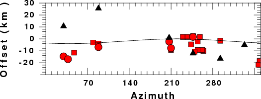

Introduction
A number of general plotting programs have been written using the
CALPLOT library of Computer Programs in Seismology.
While useful, programs such at xyplt2
are not easy to use. The program genplt
has a simpler syntax since it does not attempt to be a general purpose
plotting package. It can be used together with the program calplt to make useful figures.
Command syntax
Entering genplt -h provides
the on-line help that describes the use of the program:
USAGE:genplt -XMIN xmin -XMAX xmax -YMIN ymin -YMAX ymax -X0 x0 -Y0 y0 -NOBOX -XLIN _XLOG _YLIN YLOG -XLOG -XLIN -YLOG -YLIN -C cmdfil -? -h
-XMIN xmin (default 0.0) minimum value of X-Axis
-XMAX xmax (default ) maximum value of X-Axis
-YMIN ymin (default 0.0) minimum value of Y-Axis
-YMAX ymax (default 0.0) maximum value of Y-Axis
-X0 x0 (default 2.0) lower left corner of plot
-Y0 y0 (default 1.0) bottom left corner of plot
-XLEN xlen (default 6.0) length of X-Axis
-YLEN ylen (default 6.0) length of Y-Axis
-NOBOX (default false) do not plot axes
-XLIN (default linear) X axis is linear
-XLOG (default linear) X axis is logarithmic
-YLIN (default linear) Y axis is linear
-YLOG (default linear) Y axis is logarithmic
-C cmdfil (required).
cmdfil consists of one xy-pair file per line as
File Kolor Width Psymb
File file name of x-y pairs to be plotted
with the File and Psymb enclosed in single quotes
Kolor (integer)1=BLACK,1000=red,1050=green,1100=blue 0=white
Width width of line in inches
Psymb - a 2 character entry with the following meaning
SQ - square
TR - triangle
HX - heaxgon
DI - diamond
CI - circle
NO - no symbol - plot a line
There can be multiple -D File Kolor Width Psymb entries
-? (default false) online help
-h (default false) online help
An example of the use of this program together with calplt is given in the guide for wvfdly96:
genplt -XMIN 0 -XMAX 360 -YMIN -30 -YMAX 30 -YLEN 2 -XLEN 6 -C cmdfil -Y0 2.0 -TX 'Azimuth' -TY 'Offset (km )'
where the file cmdfil has entries of the form:
'Z.dist' 2 0.01 'SQ'
'R.dist' 2 0.01 'CI'
'T.dist' 1 0.01 'TR'
'cosoff.dat' 1 0.01 'NO'
Note that the purpose of the punctuation ' marks for the command
invocation permits passing of spaces in the title to the program.
The purpose of the ' marks in the list of plotting commands contained
in the file cmdfil is to
delimit strings since genplt
is a FORTRAN program that used list directed IO.
The data given in the files Z.dat,
R.dat, T.dat and cosoff.dat consist of one x-y pair
per line:
264.163 3.25
229.928 -0.5
358.622 6
79.4119 1
262.385 3
243.455 1.5
The plot space limits defined by the -XMIN
xmin -XMAX xmax -YMIN ymin -YMAX ymax command arguments are
used to set a clipping region so that no data points are plotted
outside the plot window,
Output
The output of the program is a CALPLOT file with the name GENPLT.PLT. The contents of
this file can be converted to EPS using the command:
plotnps -F7 -W10 -EPS -K <
GENPLT.PLT > genplt.eps
A sample image that results appears as follows:

Last changed September 19. 2010